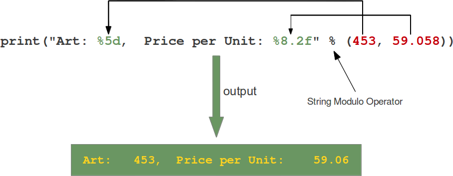
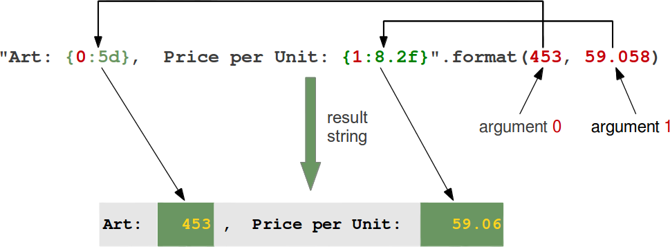

print as a statement
- In Python2.X
printis a statement not a function. - Very intutive but not very powerful.
>>> answer = 42
>>> print "The answer is: " + str(answer)
The answer is: 42
print as a function
- In Python 3.X
printis a function which gives it more control on how to print stuff. - You can import print funtion into python 2.7.X using the statement
from future import print_function - I would recommend using print as a function even in Python2.X, for one your code will be more compatiable with Python3.X and also print function gives you more control on the output.
>>> from __future__ import print_function # This internally sets a flag that lets interpreter enable print function
>>> answer = 42
>>> print('The answer is: '+str(42))
The answer is: 42
- Print as a funtion can take arguments which provide more control on how you ptint stuff.
print(value1, ..., sep=' ', end='\n', file=sys.stdout, flush=False)
#
# file: a file-like object (stream); defaults to the current sys.stdout.
# sep: string inserted between values, default a space.
# end: string appended after the last value, default a newline.
#
- With the
endargument you can choose what is appended as the last value.
# Building a simple NOP sled for memory exploits
# Only one of the output works for a NOP sled. Which one? Why?(Out of this workshop context though)
>>>
>>> print('\x90'*30)
������������������������������
>>>
>>> print('\x90'*30, end='')
������������������������������>>>
>>>
- By redefining the keyword parameter
filewe can send the output into a different stream e.g. to a file or stderr
>>> fh = open("data.txt","w")
>>> print("42 is the answer, but what is the question?", file=fh)
>>> fh.close() # we see no ouput to console after print because it's directed into the file fh
C-Style format strings
- The nearest thing to c-style printf equivalent in python.
'%s %s' % ('one', 'two')

>>> port_number = 139
>>>
>>> host = '10.5.0.6'
>>>
>>> print "Port num: %d is open on Host: %s"%(port_number, host)
Port num: 139 is open on Host: 10.5.0.6
For more on format string modulo: http://www.python-course.eu/python3_formatted_output.php
Pythonic style - string format method.
-
Python has awesome string formatters to produce beautifully formatted output.
-
The “fields to be replaced” are surrounded by curly braces {}.
'{} {}'.format('one', 'two')
>>> print "[+] Port num: {} on host {} is open.".format(port_number, hostname)
Placeholders
- Python string format method supports placeholders and an explicit positional index.
{1} {0}'.format('one', 'two') - A positional parameter of the format method can be accessed by placing the index of the parameter after the opening brace, e.g. {0} accesses the first parameter.

- Keywords can be used to index parameters as well.(Named placeholders)
>>> "Art: {a:5d}, Price: {p:8.2f}".format(a=453, p=59.058)
'Art: 453, Price: 59.06'
>>>
Padding and aligning strings
By default values are formatted to take up only as many characters as needed to represent the content. It is however also possible to define that a value should be padded to a specific length.
- We can precede the formatting with a “<” (left justify) or “>” (right justify)
>>> '{:>10}'.format('test') # right align
' test'
>>>
>>> "{0:<20s} {1:6.2f}".format('Spam & Eggs:', 6.99) # left align
'Spam & Eggs: 6.99'
>>>
>>>'{:^10}'.format('test') #center align
' test '
>>> print "\nThe webserver is at IP: {0:<20} -- Port {1:>20}\n".format('192.172.10.21','8080')
The webserver is at IP: 192.172.10.21 -- Port 8080
- Choose your character for padding.
'{:_<10}'.format('test')
>>> '{:_<10}'.format('test')
'test______'
Further reading on string format method https://pyformat.info/
sys.stdout.write()
This could be used to write to standard output or consoles when print doesn’t seem to work.
>>> pack = '\x90\x32\x67\x70'
>>> sys.stdout.write(pack)
�2gp>>>